Na czym polega ta strona
To nie katalog reklamowy oderwany od usług, tylko przegląd tego, co faktycznie robimy: remonty, dachy, podłogi, elewacje oraz nadzory na obiektach publicznych i przemysłowych. Każde zdjęcie ma podpis z nazwą realizacji. Na stronie głównej pokazujemy skrót sześciu pozycji z linkiem do pełnej listy.
Jeśli szukasz wykonawcy, zacznij od robót budowlanych w Opolu. Jeśli potrzebujesz kontroli inwestycji - od nadzoru inwestorskiego.
Dla kogo
Dla osób i firm porównujących wykonawców przed decyzją: samorządów, zarządców obiektów, inwestorów prywatnych i działów technicznych, które chcą zobaczyć podobny typ obiektu zanim wyślą zapytanie.
Jak wygląda współpraca po obejrzeniu realizacji
- Wybierasz zbliżony typ obiektu lub zakresu z galerii poniżej.
- Piszesz krótko: lokalizacja, zakres, termin.
- Ustalamy oględziny albo od razu wycenę / zakres nadzoru.
- Przechodzimy do umowy i harmonogramu.
Co obejmuje zestawienie realizacji
Poniżej: 12 wybranych realizacji. Podpisy wskazują charakter prac.
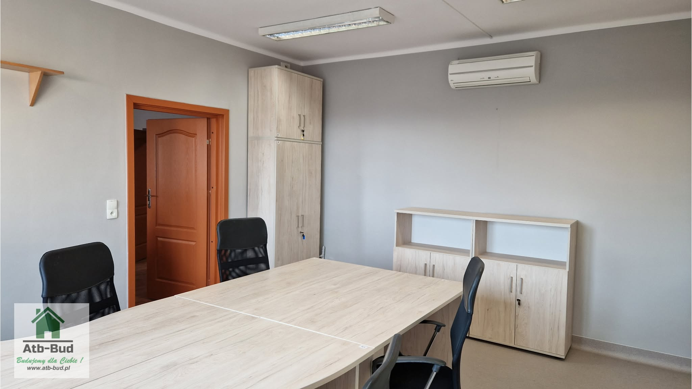
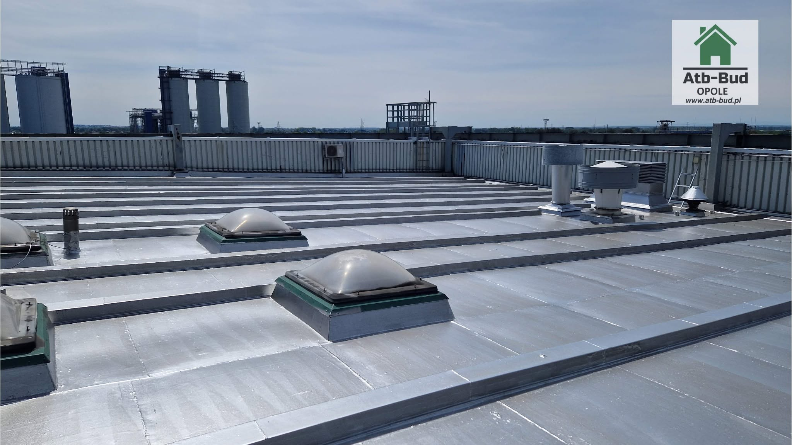
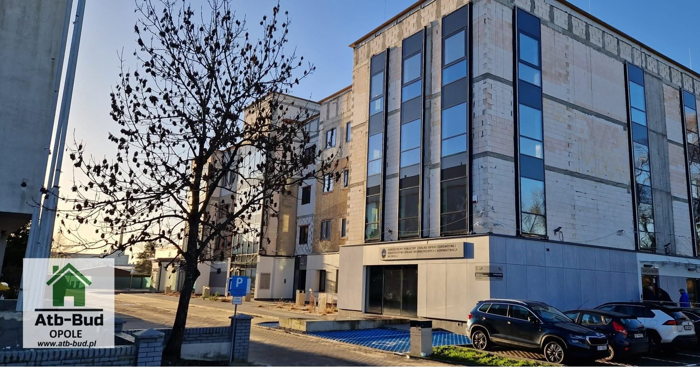
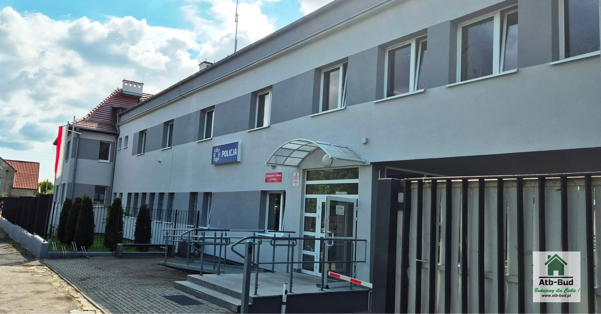
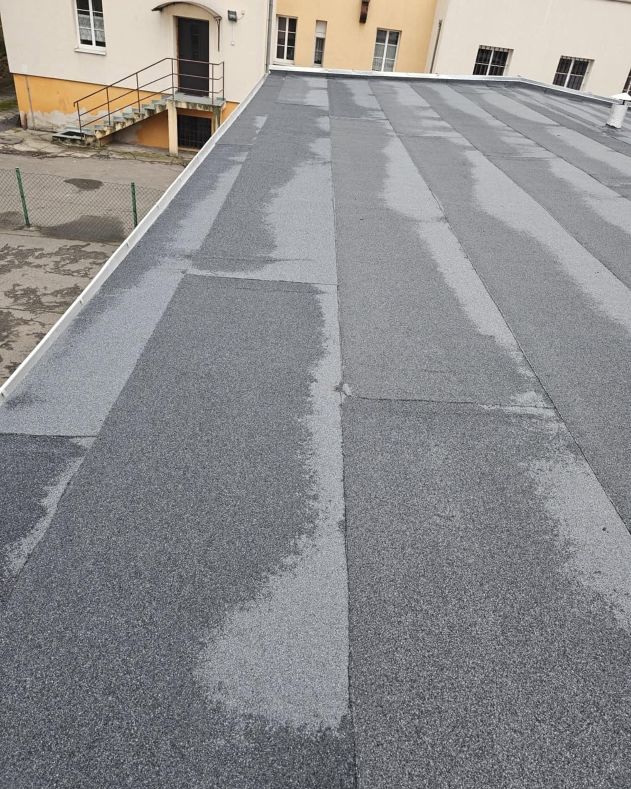
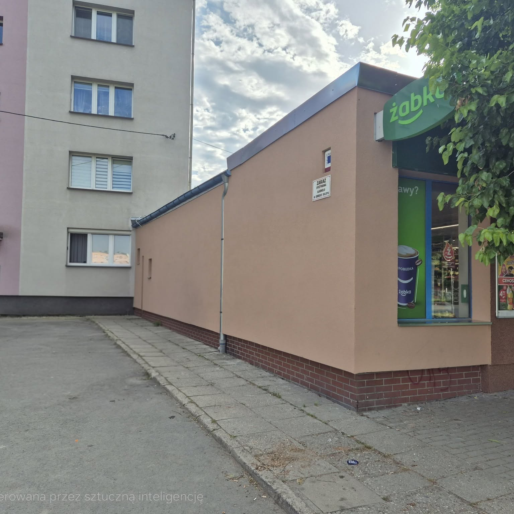
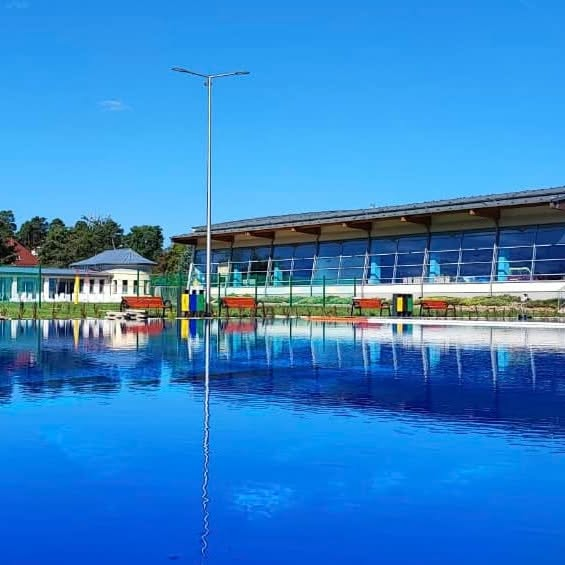
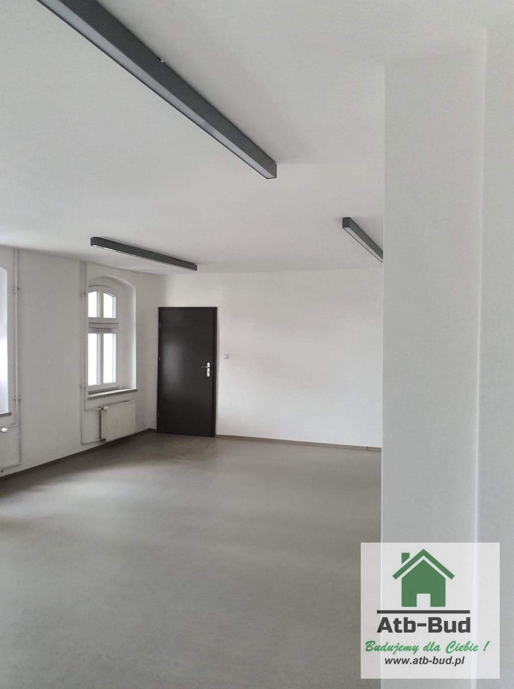
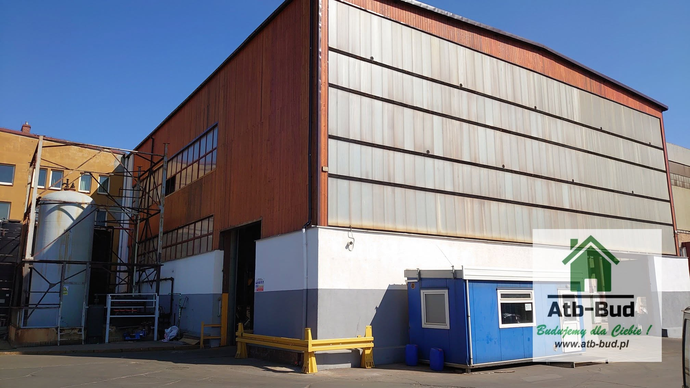
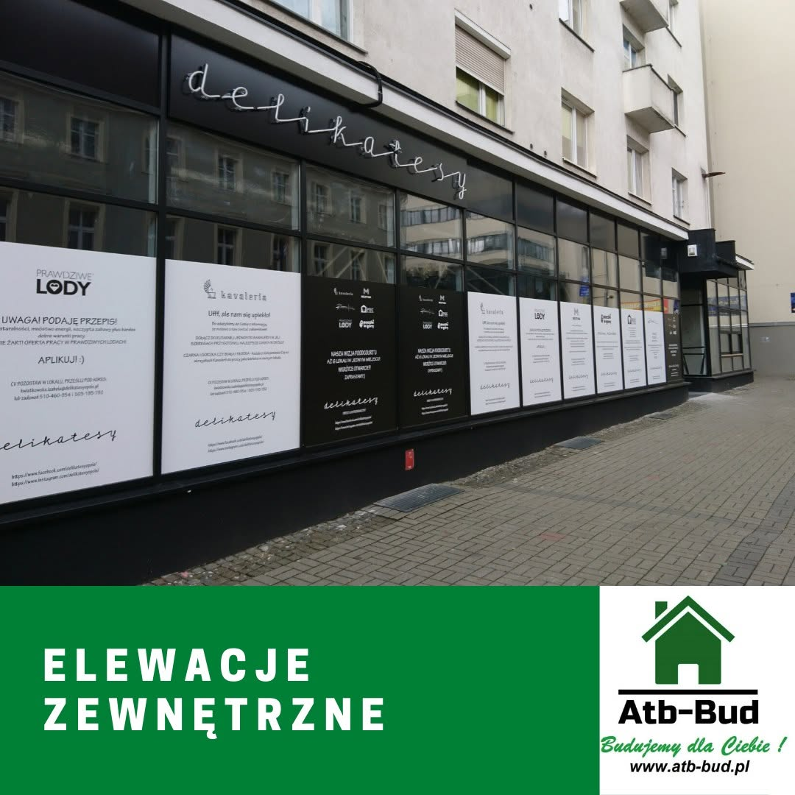
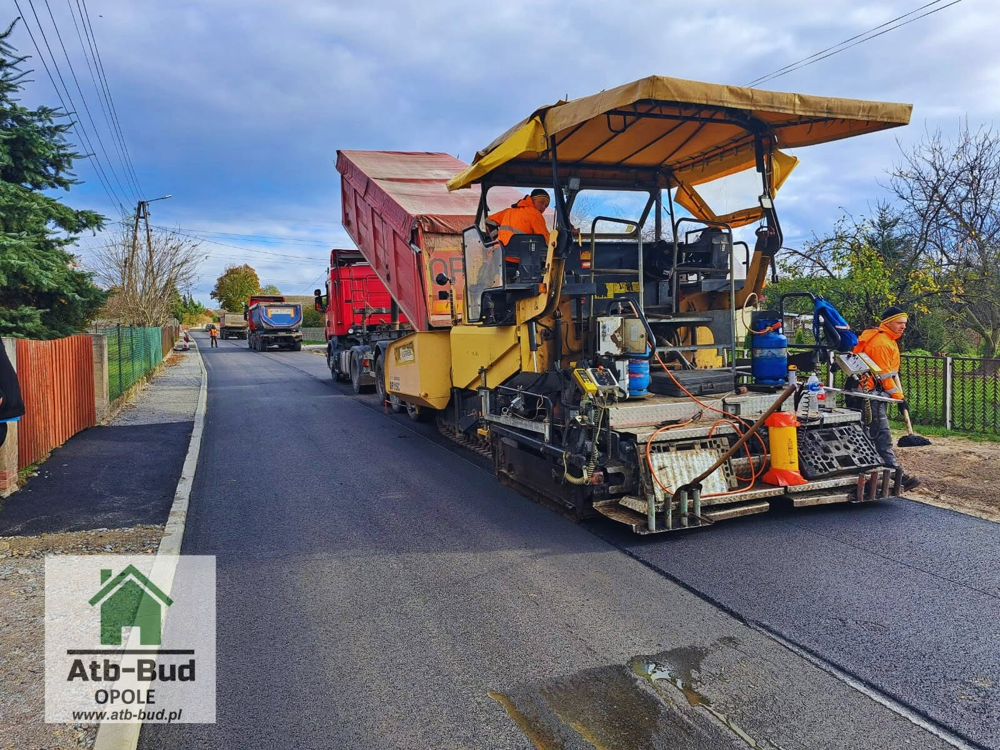
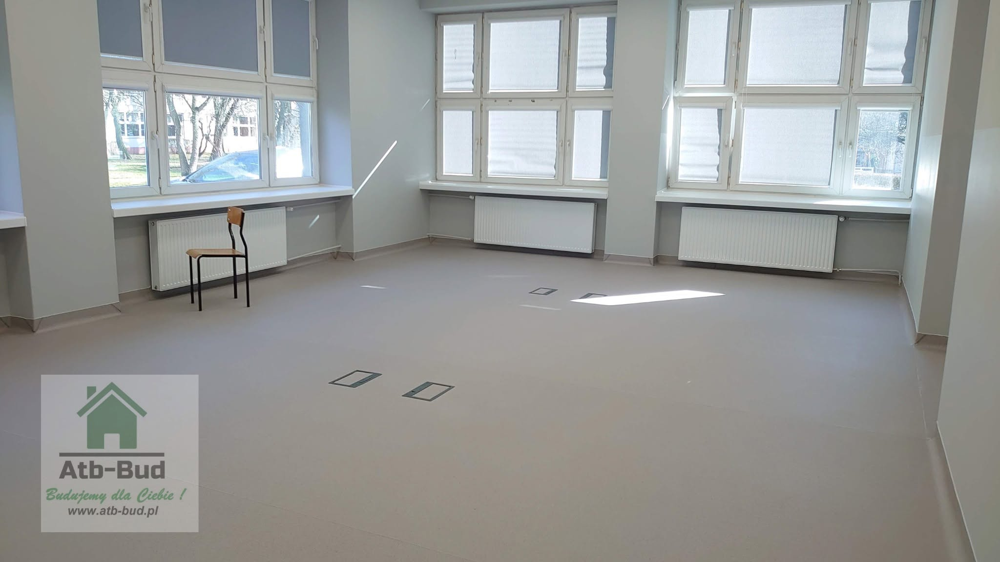
Jak czytać galerię
Zdjęcia pokazują efekt albo etap prac - nie zawsze finalny „katalogowy” kadr. Na obiektach czynnych czasem widać zabezpieczenia, rusztowania albo oznakowanie. To normalne: dokumentujemy realną budowę, nie studio.
Realizacje nadzorowe (np. szpital MSWiA, basen w Strzelcach Opolskich, drogi) podkreślają rolę kontroli jakości. Realizacje wykonawcze (biura KOWR, elewacje, dachy, podłogi w szkołach, restauracja) pokazują zakres robót, z jakimi mierzymy się jako wykonawca.
Wybór podobnej realizacji nie oznacza kopiowania ceny ani terminu 1:1. Inny stan istniejący, inna logistyka obiektu i inny sezon zmieniają nakład. Galeria służy do pierwszej selekcji: „ten typ obiektu / ten typ zakresu już robiliśmy”.
Przykłady z doświadczenia
Ścieżka rowerowa Prudnik-Jindřichov - nadzór inwestorski nad inwestycją transgraniczną; inny profil ryzyka niż remont wnętrz, bo dochodzi koordynacja drogowa i warunki terenowe.
Zakład Opiekuńczo-Leczniczy w Głogówku - wielobranżowy nadzór zakończony odbiorem bez usterek; pokazuje, że domknięcie dokumentacji i jakości da się doprowadzić do czystego finału.
Modernizacje szkół i obiektów przemysłowych - prace w wymagających terminach i czynnych obiektach; ten sam scenariusz powtarza się w wielu zapytaniach z Opola.
Co dalej po obejrzeniu zdjęć
Najskuteczniejsze zapytanie zawiera: lokalizację obiektu, krótki opis zakresu, czy obiekt jest czynny oraz oczekiwany termin. Na tej podstawie sugerujemy, czy bliżej Ci do ścieżki wykonawczej, nadzoru, czy najpierw kosztorysu i uporządkowania dokumentacji.
Co mówią poszczególne typy realizacji
Remonty biur i klas (m.in. KOWR Opole, szkoła gastronomiczna) pokazują prace wewnątrz czynnych obiektów: logistyka materiałów, ochrona ciągów komunikacyjnych, odbiór strefami. To scenariusz typowy dla instytucji w Opolu.
Elewacje (komisariat, Żabka, hala produkcyjna) to prace fasadowe z wpływem na wizerunek obiektu i szczelność. Zakres bywa łączony z obróbkami i detalami, które widać dopiero z bliska na budowie.
Dachy płaskie (Elektrownia Opole, komenda w Niemodlinie) ilustrują prace wysokościowe i izolacyjne. Tu liczy się sekwencja warstw i zabezpieczenie przed opadem - błąd etapu widać dopiero przy kolejnym deszczu.
Podłogi (wykładziny PCV w szkole) to przykład zakresu „wąskiego”, ale krytycznego dla użytkownika: równość, spiny, odporność na utrzymanie czystości.
Nadzory (szpital MSWiA, basen Strzelce Opolskie, drogi) to inna perspektywa: nie my kładziemy warstwę bitumiczną czy płytki, tylko pilnujemy, by zrobił to wykonawca zgodnie z umową i sztuką. Galeria nadzorowa ma sens dla inwestora, który porównuje nie kolor elewacji, tylko doświadczenie kontroli.
Remont restauracji pokazuje obiekt komercyjny z krótkim oknem czasowym - inny rytm niż wielomiesięczna inwestycja publiczna. Porównując realizacje, warto pytać o termin i tryb pracy, nie tylko o zdjęcie końcowe.
Ograniczenia publikacji
Nie każdy obiekt można opisać nazwą inwestora lub pełnym adresem. Część podpisów jest ogólna z powodów umownych lub bezpieczeństwa. Jeśli potrzebujesz referencji do konkretnego typu obiektu, doprecyzujemy to w kontakcie - o ile pozwalają na to zgody.
Galeria nie jest pełnym archiwum. To selekcja kadrów, które da się pokazać publicznie. Brak zdjęcia z danej branży nie oznacza braku doświadczenia; oznacza, że nie mamy jeszcze materiału do publikacji albo obiekt nie może być ujawniony.
Najczęstsze pytania
Czy zdjęcia pokazują tylko prace ATB-BUD jako wykonawcy?
Galeria obejmuje zarówno roboty wykonawcze, jak i inwestycje, na których prowadziliśmy nadzór. W podpisie każdej realizacji wskazujemy charakter pracy (np. remont, nadzór).
Czy mogę zobaczyć więcej zdjęć z jednej realizacji?
Na stronie publikujemy wybrane kadry. Pełniejszy materiał z konkretnej inwestycji możemy omówić przy kontakcie - zależnie od zgód inwestora i charakteru obiektu.
W jakim regionie są te realizacje?
Większość pokazanych prac dotyczy Opola i Opolszczyzny; nadzór bywa też poza województwem opolskim (śląskie, dolnośląskie), zgodnie z obszarem działania firmy.
Jak wybrać podobną realizację do mojego obiektu?
Napisz, jaki masz typ obiektu i zakres (dach, elewacja, wnętrza, nadzór). Wskażemy najbardziej zbliżone przykłady i zaproponujemy kolejny krok - oględziny albo wycenę.
Porozmawiajmy o zakresie
Opisz inwestycję - wrócimy z propozycją sposobu realizacji lub nadzoru. Możesz też zadzwonić: 605 680 745.